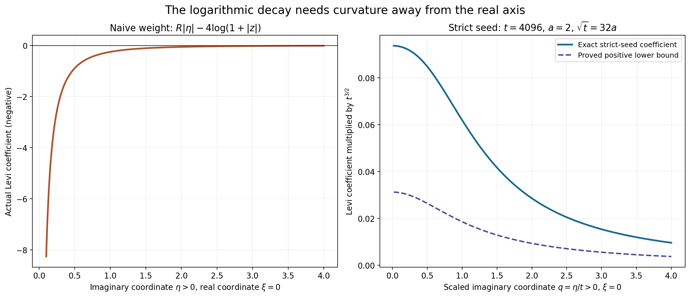
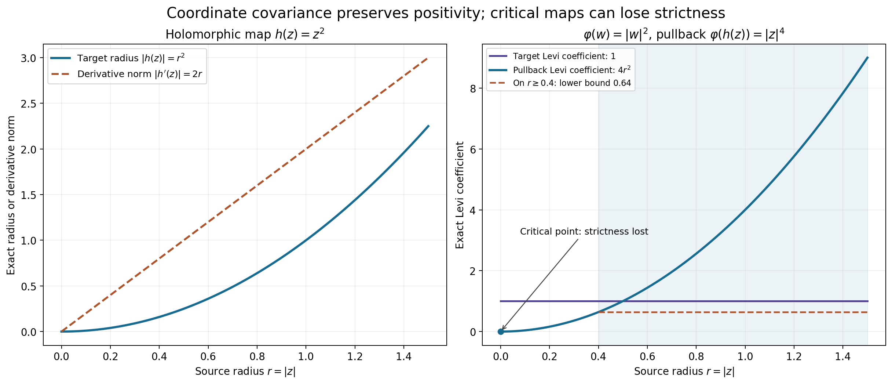

Why complex Fourier weights need a construction
Original learner exposition by GPT-6.1 Sol (OpenAI), Ultra, October 2026. CC0 1.0.
The chapter's closing notes explain an apparent obstruction: the usual support-growth expression with a logarithmic decay term need not be plurisubharmonic. The completed weight constructions overcome that obstruction by controlling curvature, carrier enlargement and test-space topology together.
The full proof treats all three notes on printed pp.300–301 of Hörmander II. It gives actual negative-curvature examples, a positive strict seed, the exact neighborhood equivalence and the local coordinate calculation. The note's broader-domain and systems references retain their actual scope.
What each source note contributes
| Source note | Concrete treatment here | Scope of the resulting claim |
|---|---|---|
| Broader pseudoconvex and Stein settings, p.300 | Local Levi covariance is proved in NW4; L144 contains the actual weighted Euclidean proof | The source's broader global theorem is a reference, not a theorem imported from a coordinate change |
| Equivalent strict weights, p.301 | NW1–NW3 compute the obstruction and prove the exact cofinal topology comparison; L149 and L153 supply both complete constructions | Compact weighted tests and compact smooth tests have their distinct stated topologies; weights can depend on the neighborhood |
| Scalar versus systems fundamental principle, p.301 | NW5 identifies the scalar theorem and the additional systems ingredients named in the source | L155 gives the full scalar arbitrary-distribution formula; no general systems theorem is claimed |
Worked example 1: a full-dimensional carrier still gives negative curvature
For \(z=\xi+i\eta\), \(r=|z|\), \(K=[-R,R]\), and \(\kappa>0\), set
\[ \psi(z)=R|\eta|-\kappa\log(1+r). \tag{L156.1} \]On \(\eta>0\), the support term is affine. Radial differentiation gives
\[ \partial_z\partial_{\bar z}\psi =-\frac{\kappa}{4r(1+r)^2}<0. \tag{L156.2} \]Thus using a carrier with interior does not make this weight PSH. For example at \(z=i\) and \(\kappa=4\), its Levi coefficient is \(-1/4\), independent of \(R\).
This has a direct circle-mean interpretation. Around any smooth point \(z_0\) in the upper half-plane, Taylor expansion and the averages of \(\cos\theta,\sin\theta,\cos^2\theta,\sin^2\theta\) yield
\[ \frac1{2\pi}\int_0^{2\pi}\psi(z_0+h e^{i\theta})d\theta-\psi(z_0) =h^2\,\partial_z\partial_{\bar z}\psi(z_0)+o(h^2). \tag{L156.3} \]The linear terms average to zero, the mixed quadratic term averages to zero, and each pure quadratic has mean \(h^2/2\) before its Taylor factor \(1/2\). The remainder is uniform on the shrinking circle. At \(z_0=i\), the right side is negative for all sufficiently small \(h\), contradicting the submean inequality. Choose \(h<1\) so the circle never touches the nonsmooth axis.
Worked example 2: strict curvature with an explicit support cost
Choose \(a=2\), \(t=4096\), \(R=1/128\), and \(K=[-R,R]\). Put
\[ \Psi(z)=R|\eta|-2\log(t^2+|z|^2) +\frac{\sqrt{t^2+\eta^2}}{\sqrt t}-(t^2+\eta^2)^{1/4}. \tag{L156.4} \]The equality \(\sqrt t=32a=64\) makes the full NW2 calculation applicable:
\[ \mathcal L_\Psi\ge\frac1{32}(4096^2+\eta^2)^{-3/4}I. \tag{L156.5} \]The support function contributes nonnegative distributional curvature on the axis. Away from it the ordinary smooth coefficient already has the positive bound shown.
The added radial term has slope at most \(1/\sqrt t=1/64\). Thus the enlarged carrier \(L=[-3/128,3/128]\) absorbs the cost:
\[ H_K(\eta)+\frac{|\eta|}{64}=H_L(\eta),\qquad p_t(\eta)\le\frac{|\eta|}{64}+64. \tag{L156.6} \]Both carriers lie strictly inside \(X=(-1/32,1/32)\). The strict seed controls a real mathematical tradeoff: positive curvature requires spare support growth. Compatible maxima and increasing imaginary-strip cutoffs in L153 turn such seeds into one final neighborhood weight.

The left panel samples the actual coefficient on \(\xi=0,\eta>0\). The right uses \(q=\eta/t>0\) and multiplies both strict coefficients by \(t^{3/2}\); the support term is affine at every displayed point. The exact formulas, scaling and support intervals are recorded in geometry.json.
Worked example 3: a critical holomorphic map can lose strictness
For \(\varphi(w)=|w|^2\) and \(h(z)=z^2\), the pullback is
\[ \varphi(h(z))=|z|^4,\qquad \mathcal L_{\varphi\circ h}=|h'(z)|^2\mathcal L_\varphi=4|z|^2. \tag{L156.7} \]The target coefficient is one everywhere. The pullback coefficient vanishes at the critical point \(z=0\). On an annulus \(|z|\ge\epsilon>0\), it is at least \(4\epsilon^2\). A chosen local inverse away from zero is a valid coordinate chart; \(z^2\) is not one global chart around zero.
The calculation demonstrates precisely what local coordinate covariance preserves. It does not give a global weighted estimate on an arbitrary manifold. The chapter's Fourier proof also uses translations and compact convex support functions in a global vector space.

Every point on the radial axis means the norm of an actual complex coordinate. The target is evaluated at \(|w|=|z|^2\); the figure shows the exact identity \(\varphi(w)=|z|^4\) and the exact pullback coefficient \(4|z|^2\). It is not a global-coordinate or manifold-solvability diagram.
Worked example 4: equivalent neighborhoods require a family of weights
Let \(\mathcal D(X)\) carry its smooth compact support-stage topology, and let \(\mathcal F\) contain every seminorm
\[ q_\phi(v)=\left(\int_{\mathbb C^n}|F_v(z)|^2e^{-2\phi(z)}dV(z)\right)^{1/2} \tag{L156.8} \]with the three L153 conditions. Each is stage-continuous by full smooth Fourier decay and the compact-growth estimate. Therefore the topology they generate is no finer than the original one.
Conversely a given zero-neighborhood contains a convex balanced zero-neighborhood \(V\). The full weighted-neighborhood theorem constructs a possibly different \(\phi\) with \(\{q_\phi<1\}\subset V\). Every original neighborhood thus contains one generated by \(\mathcal F\); the generated topology is no coarser either. The two topologies coincide.
This statement is cofinality of the family, not the assertion that one fixed norm describes the whole smooth-test topology. The four-condition L149 theorem instead uses the fixed weighted test space \(B_{2,k}\cap\mathcal E'(X)\). L153 and L155 allow derivative orders that increase over an exhaustion. The original proofs retain those separate interfaces.
Exercises with complete solutions
-
Compute the exact naive coefficient at \(z=1+i\), \(\kappa=4\). Here \(r=\sqrt2\), and the support term is affine because \(\eta>0\). NW3 gives \(-1/[\sqrt2(1+\sqrt2)^2]\). It is strictly negative for every \(R>0\), so the carrier size cannot cure the obstruction at this point.
-
Why does the positive curvature on the axis not repair this weight? Take a nonnegative nonzero smooth test supported in a small disk entirely within \(\eta>0\). The support term's Laplacian vanishes there, while the logarithmic term has the strictly negative NW3 coefficient. Its distributional Levi pairing with that test is negative. Any positive measure on the disjoint axis has zero pairing with the same test, so it cannot make the full Levi distribution positive.
-
Verify the smooth negative-curvature variant. Write \(s=1+z\bar z\). Then \(\partial_z\log s=\bar z/s\), and \(\partial_{\bar z}(\bar z/s)=1/s-z\bar z/s^2=1/s^2\). Multiplication by \(-\kappa/2\) gives the strict negative coefficient in NW4, with no singular carrier ridge.
-
Prove the radial lower bound in NW6. For \(0<q\le1\), \(q^{3/4}\ge q\), so \(q^{3/4}+1/4-3q/4\ge q/4+1/4\ge1/4\). The transverse expression is \(t^{-1/2}s^{1/4}-1/2\ge1/2\), since \(s\ge t^2\). These are the actual real-Hessian eigenvalue ratios. Divide by four for the complex Hessian, then subtract the logarithm bound \(a/s\le s^{-3/4}/32\) using \(\sqrt t\ge32a\). The result is exactly NW7.
-
Check the numerical support intervals without dropping a growth term. The original interval has radius \(1/128\), and the correction has slope at most \(1/64=2/128\). Their sum is \(3/128\), exactly the radius of \(L\). Also \(3/128<1/32=4/128\), leaving a strict gap before the domain boundary. The additive constant \(\sqrt t=64\) only changes the multiplicative weight constant; it does not change the support function.
-
Prove that the whole-complex seminorm is continuous on one support stage. Let \(S\) be the compact support. The growth bound gives \(e^{-\phi}\le C(1+|z|)^{N_S}e^{-H_S(\eta)}\), while integration by parts bounds \(|F_v|\le C_L(1+|z|)^{-L}e^{H_S(\eta)}p_L(v)\). Their product cancels the support exponential. The square is integrable in real dimension \(2n\) when \(L>N_S+n\), so \(q_\phi(v)\le C' p_L(v)\). This proves exactly the stage continuity used in the cofinality argument.
-
State both directions of the topology comparison. Continuity of every \(q_\phi\) makes all finite intersections of its open balls original zero-neighborhoods, so their topology is no finer. The construction supplies a \(q_\phi\) ball inside every convex balanced original neighborhood, so every original neighborhood contains a generated one; their topology is no coarser. Both inclusions prove equality. It does not supply one universal \(\phi\) or pointwise equality of weights.
-
Derive the Levi pullback in arbitrary finite dimension. Differentiate \(\varphi(h(z),\overline{h(z)})\) once in a holomorphic variable and once in an antiholomorphic variable. Holomorphicity kills mixed derivatives of \(h\), and antiholomorphicity kills those of its conjugate. The remaining sum has the mixed target Hessian contracted with \(Dh\,w\) and its conjugate. With the \(w^*\mathcal Lw\) convention, it is \(w^*Dh^*\mathcal L_\varphi Dh\,w\), proving NW10.
-
Find a strict lower bound on a compact inverse chart for \(z^2\). A compact set avoiding zero has \(|z|\ge\epsilon>0\). Hence \(|h'(z)|^2=4|z|^2\ge4\epsilon^2\), and its pullback of the target coefficient one has that positive bound. At zero the derivative vanishes, so the same claim on a set containing zero is false. A local inverse branch exists around a nonzero point; two-to-one global behavior is a separate issue.
-
Why do scalar factor multiplicities not settle a polynomial system? Each scalar representation ensures that one polynomial annihilates its kernels and includes all repeated-factor amplitudes. A system requires every equation to annihilate the same distribution and its data to satisfy relations among those equations. Separate densities for separate scalar equations do not enforce common support or those relations. The source explicitly adds local algebraic geometry and higher-form cohomology for its general systems reference, while proving the single-operator case here. Thus the correct course statement is the full scalar theorem with its actual boundary.
Reproduce and follow the proofs
The formal source, figure program, exact geometry, independent checks, actual results and reproduction guide are provided. The checks supplement the full calculations and topology proofs.
The human source is Lars Hörmander, The Analysis of Linear Partial Differential Operators II, Notes on printed pp.300–301. The broader-domain and systems references remain references. These notes treatments and their exact linked providers do not complete Chapter16, earlier assigned residuals or recursive prerequisite closure.
Complete proof
Original proof exposition by GPT-6.1 Sol (OpenAI), Ultra, October 2026. CC0 1.0.
The closing notes of Hörmander's Chapter15 explain why the complex weights were constructed, which broader settings motivate the method, and why the chapter proves the scalar constant-coefficient case. We give the exact negative-curvature calculation and topology comparison, and identify the limits of the current theorems. These are treatments of the three source notes, not assertions that their externally referenced theories have been proved here.
The human source is Lars Hörmander, The Analysis of Linear Partial Differential Operators II, printed pp.300–301. The approved current-edition native pages313–314 were read privately. The mathematical providers are the full L149 four-condition compact-weight construction, L153 smooth-test neighborhood construction, L144 weighted Cauchy–Riemann proof, and L155 arbitrary-distribution representations. None of the protected source body or source images is included.
NW1. The naive support weight has actual negative curvature
In one complex dimension, put \(z=\xi+i\eta\), \(r=|z|\), and take the full-dimensional compact real interval \(K=[-R,R]\), \(R>0\). Its support function is \(H_K(\eta)=R|\eta|\). For \(\kappa>0\), consider the exact naive expression
\[ \psi(z)=H_K(\eta)-\kappa\log(1+|z|). \tag{NW1} \]On either open half-plane \(\eta>0\) or \(\eta<0\), the support function is affine and has zero ordinary Laplacian. There \(r>0\), so the real radial Laplacian gives
\[ \Delta\log(1+r) =-\frac1{(1+r)^2}+\frac1{r(1+r)} =\frac1{r(1+r)^2}. \tag{NW2} \]With \(\partial_z=(\partial_\xi-i\partial_\eta)/2\), the one-dimensional Levi coefficient is one quarter of the Laplacian. Consequently
\[ \partial_z\partial_{\bar z}\psi =-\frac{\kappa}{4r(1+r)^2}<0 \quad(\eta\ne0). \tag{NW3} \]This proves that \(\psi\) is not PSH. The positive distributional curvature of \(R|\eta|\) on the real axis cannot repair a negative coefficient on either open half-plane. To see this in the distributional definition, choose any nonzero nonnegative smooth test compactly supported inside such a half-plane; the integral of the smooth NW3 coefficient against it is strictly negative. Thus the failure does not depend on the nonsmooth axis or on a degenerate carrier.
There is also a completely smooth variant when \(K=\{0\}\):
\[ \widetilde\psi(z)=-\frac{\kappa}{2}\log(1+|z|^2),\qquad \partial_z\partial_{\bar z}\widetilde\psi =-\frac{\kappa}{2(1+|z|^2)^2}<0. \tag{NW4} \]Direct Wirtinger differentiation proves NW4. It is another counterexample, distinct from the exact NW1 calculation.
NW2. The strict seed supplies the missing curvature
Let \(t\ge1\), \(a>0\), and \(\sqrt t\ge32a\). In any complex dimension set
\[ \begin{aligned} s&=t^2+|\eta|^2,\qquad q=t^2/s,\\ p_t(\eta)&=t^{-1/2}s^{1/2}-s^{1/4},\\ \Psi(z)&=H_K(\eta)-a\log(t^2+|z|^2)+p_t(\eta). \end{aligned} \tag{NW5} \]The full convex-support proof in L153 makes \(H_K\) PSH distributionally. The logarithm's ordinary Levi matrix is \(I/(t^2+|z|^2)-\overline z z^{\mathsf T}/(t^2+|z|^2)^2\), between zero and \(I/(t^2+|z|^2)\). Its negative contribution therefore has magnitude at most \(a/s\).
For completeness, the radial real Hessian eigenvalues of \(p_t\), after division by \(s^{-3/4}\), are
\[ t^{-1/2}s^{1/4}-\tfrac12\ge\tfrac12 \quad\text{transversely},\qquad q^{3/4}+\tfrac14-\tfrac34q\ge\tfrac14 \quad\text{radially}. \tag{NW6} \]These follow from two ordinary derivatives of \(t^{-1/2}s^{1/2}-s^{1/4}\). The second lower bound uses \(q^{3/4}\ge q\) for \(0<q\le1\). At \(\eta=0\) their limits agree; in dimension one only the radial eigenvalue is needed. Dividing by four for the complex Hessian gives \(\mathcal L_{p_t}\ge s^{-3/4}I/16\). Also \(a/s\le a\,t^{-1/2}s^{-3/4}\le s^{-3/4}/32\). Thus
\[ \mathcal L_\Psi\ge\frac1{32}(t^2+|\eta|^2)^{-3/4}I \ge\frac{t^{-3/2}}{32}(1+|\eta|^2)^{-3/4}I. \tag{NW7} \]Every inequality is distributional if the support function is nonsmooth. Positivity of \(p_t\) follows from \(s^{1/2}\ge t\), and its gradient norm is at most \(t^{-1/2}\). The logarithmic gradient norm is at most \(a/t\).
The added curvature has a support-growth cost. If \(K+t^{-1/2}\overline B\subset L\), then
\[ H_K(\eta)+t^{-1/2}|\eta|\le H_L(\eta),\qquad p_t(\eta)\le t^{-1/2}|\eta|+\sqrt t. \tag{NW8} \]The latter follows from \(s^{1/2}\le t+|\eta|\) and discarding the nonpositive term \(-s^{1/4}\). Therefore the seed uses a controlled enlargement of the carrier. It is not obtained by merely smoothing a real-frequency moderate weight.
NW3. Equivalent neighborhoods, not identical weight functions
Let \(\mathcal D(X)\) have its compact smooth support-stage inductive topology on an open convex \(X\). For every weight with the three L153 conditions, define
\[ q_\phi(v)=\left(\int_{\mathbb C^n}|F_v(z)|^2e^{-2\phi(z)}\,dV(z)\right)^{1/2}. \tag{NW9} \]Each \(q_\phi\) is continuous in that topology: on a fixed support \(S\), the full smooth Fourier estimate of L153 TP11 and \(e^{-\phi}\le C_S(1+|z|)^{N_S}e^{-H_S(\eta)}\) bound the integrand by a finite derivative seminorm squared times \((1+|z|)^{-2(L-N_S)}\); choose \(L>N_S+n\). The \(L^2\) triangle inequality makes it a seminorm, and its restrictions to all stages are continuous.
Let \(\mathcal F\) be the family of all these seminorms, allowing the constants and weights to depend on the neighborhood. Its generated topology is at most the smooth-test topology, by that continuity. Conversely every smooth-test zero-neighborhood contains a convex balanced zero-neighborhood \(V\), and the fully proved L153 TP5 produces one such \(\phi\) with \(\{q_\phi<1\}\subset V\). Thus every original zero-neighborhood contains a zero-neighborhood generated by \(\mathcal F\). The two topologies coincide.
This is the precise equivalence needed in the note. It does not assert a single fixed \(\phi\) gives the entire LF topology, or pointwise comparability of the naive weight and one strict weight. The distinct L149 theorem gives the corresponding four-condition construction on \(B_{2,k}\cap\mathcal E'(X)\), with the actual support stages and a fixed moderate \(k\). L153 gives the smooth-test topology, whose required derivative orders can vary with stage. The full L155 proof uses this latter topology to represent distributions with unbounded local orders. These two completed constructions meet the two different test-space requirements.
NW4. Coordinate covariance and the broader-domain note
For a holomorphic map \(h:\Omega\to\Omega'\) and a smooth real function \(\varphi\), the chain rule gives the exact Levi pullback
\[ \mathcal L_{\varphi\circ h}(z)[w] =\mathcal L_\varphi(h(z))[Dh(z)w]. \tag{NW10} \]Indeed a mixed \(z,\bar z\) derivative of \(h\) or \(\overline h\) is zero; only the product of a holomorphic first derivative, the mixed Hessian of \(\varphi\), and its conjugate derivative remains. With the Hermitian matrix convention \(w^*\mathcal L_\varphi w\), the matrix is \(Dh(z)^*\mathcal L_\varphi(h(z))Dh(z)\).
For a proper PSH target without smoothness, positive local radial convolution preserves PSH and recovers its value at every point, as proved in L143 HC6 with its explicit radial-recovery provider. On a neighborhood of the compact image of any closed source complex disc, these smoothings have a common finite upper bound. Their pullbacks satisfy the line submean inequality by NW10. Apply Fatou to that upper bound minus the circle integrands and use pointwise recovery to pass the inequality to the pullback. Upper semicontinuity follows from upper semicontinuity of the target and continuity of \(h\). The pullback is therefore PSH, with an identically \(-\infty\) component permitted; if the target itself is identically \(-\infty\), that case is immediate. No monotonicity of the smoothing family is needed. If \(h\) is biholomorphic and \(\varphi\) has a strict smooth Levi bound, the smallest singular value of \(Dh\) has a positive minimum on each compact subset; NW10 retains a positive local bound there.
The model \(h(z)=z^2\), \(\varphi(w)=|w|^2\), gives
\[ \varphi\circ h=|z|^4,\qquad \partial_z\partial_{\bar z}|z|^4=4|z|^2. \tag{NW11} \]Thus positivity pulls back, but strict positivity is lost at the critical point \(z=0\). Away from zero, a chosen local inverse chart restores the strictly positive local bound.
This local coordinate fact is not the global \(L^2\) solvability theorem on arbitrary pseudoconvex domains or Stein manifolds mentioned in the source note. Our L144 proof establishes its stated Euclidean-domain weighted estimate; the compact Fourier constructions above use the vector space \(\mathbb C^n\), its translations, support functions and whole-space transforms. The broader geometric theory cited in the note would require its own domain, metric, bundle, completeness and boundary hypotheses and a proof of the corresponding global estimate. We neither import nor silently infer that theorem from a change of coordinates.
NW5. The scalar and systems boundary
The completed L150/L152/L155 representation theorems concern one scalar polynomial operator. They retain every factor and multiplicity of that polynomial, but this does not constitute the general systems fundamental principle. For several polynomial equations, common characteristic sets and algebraic relations among the equations must be handled together; separate scalar representations do not by themselves impose those relations on their densities.
The source's closing note explicitly points to additional local algebraic geometry and bounded cohomology for higher-degree forms when describing the full systems theory, and explains why the chapter restricts its proof to one operator. We retain that boundary. The three notes are accounted for as: broader-domain reference with its actual scope; proved strict-weight and topology constructions above and in the exact providers; and an explicit scalar/systems boundary. No externally cited systems theorem is marked proved, no new systems assignment is inferred, and no unrelated source is required for these scalar results.
Source locators and course obligations
The note records are N15-dbar-domains on printedp300 and N15-equivalent-weights/N15-system-boundary on printedp301 of Hörmander II. The actual native pages are313/314. Original calculations NW1–NW11 and the full topology argument give the mathematical clarification; the linked original lessons give the full weighted estimates and representation providers.
This notes treatment does not claim the entire assigned course is complete. Chapter15 passage coverage, all78 Chapter16 exact targets, every assigned residual in Chapters10–13 and recursive prerequisite closure remain separate explicit obligations.